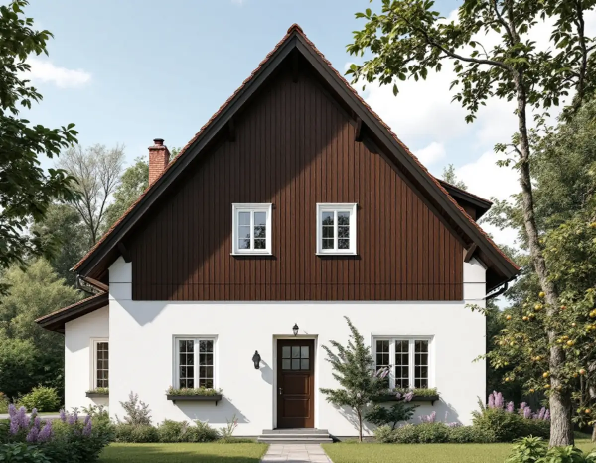
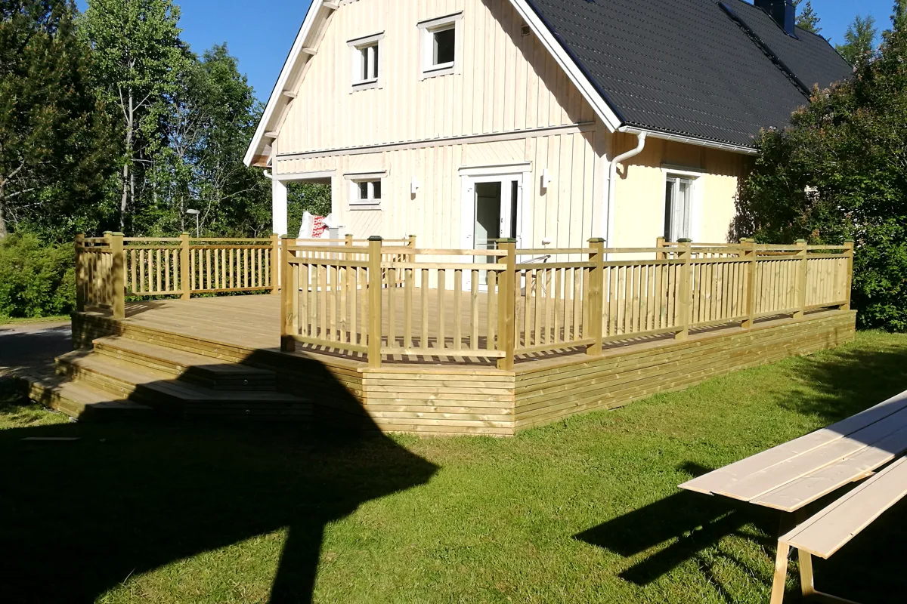
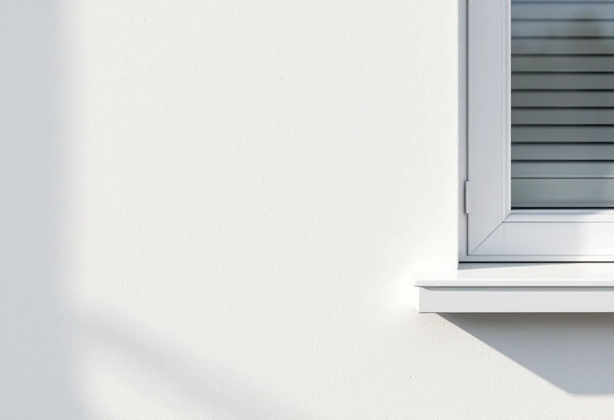

Platsbesök
Puts, panel och nuvarande färgtyper går vi igenom.
Många villor i Älvsjö villastad har två fasadmaterial på samma hus: slätputs på bottenvåningen och träpanel i gavelspetsarna. Puts och trä behöver olika färgtyper, och det är där en fasadmålning i Älvsjö skiljer sig från en vanlig trävilla. Geal Entreprenad AB målar om fasader i Älvsjö och väljer färgtyp för varje material för sig.

Stadsmuseets inventering av Älvsjö villastad beskriver hur AB Hem på landet köpte mark från Älvsjö säteri 1908 och 1911. En relativt vanlig hustyp var det friliggande enfamiljshuset med vit slätputsad bottenvåning och gavelspetsar klädda med mörkbrunmålad panel på förvandring, småspröjsade fönster med luckor och brant sadeltak med rött tegel.
Inventeringen visar också en ritning från 1913–1914 till en villa i villastaden med just slätputsad bottenvåning och gavelspetsar med panel på förvandring. Enligt inventeringen finns hustypen kvar i Älvsjö i så gott som helt ursprungligt skick.

Riksantikvarieämbetet beskriver kalkfärg som den färg som i århundraden använts på puts, och anger att den i dag främst används vid ommålning av putsytor som tidigare kalkats och på ny kalkputs på kulturhistoriskt värdefulla hus. Kalkfärgen fäster bra på kalkputs men dåligt på cementrika eller förgipsade underlag, och den släpper nästan obehindrat igenom fukt.
Har bottenvåningen lagats med cementhaltig puts någon gång ska sådana lagningar enligt myndigheten tas bort och putsas om med kalkputs innan fasaden kalkas. Därför börjar vi med att knacka och titta på putsen, så att vi vet vilket underlag färgen ska ligga på.
På gavelspetsarnas panel är linoljefärg den traditionella färgtypen. Riksantikvarieämbetet skriver att linoljefärg dominerade på trähus ända fram till mitten av 1900-talet där rödfärg inte användes, att den ska strykas tunt och att den torkar långsammare än moderna färger. Bästa målningsperioden är maj till augusti, och direkt solsken bör undvikas.
Myndigheten påpekar också att det inte räcker att välja en traditionell färgtyp: kulör och teknik ska vara riktiga för just den byggnaden. Om villastadens kulörer och snickerier kan du läsa under målare i Älvsjö.
Kalkfärg ska enligt Riksantikvarieämbetet målas utan avbrott på en fasadyta och får bara göra uppehåll vid hörn eller andra naturliga gränser. På en Älvsjövilla är övergången mellan puts och panel en sådan gräns, och vi planerar arbetet så att putsen målas klart innan panelen ovanför strykes.
Kalkfärg målas utomhus från senvåren till eftersommaren och i god tid före frost, med ett skikt per dag. Eftersom linoljefärgen på panelen har sin bästa period under samma månader lägger vi upp ett schema där de två färgtyperna inte stör varandra.
I stadens strategi Varsam är del av Älvsjö markerad som kulturhistoriskt värdefull miljö och som område med generösa byggrätter i äldre planer. Stockholms stad räknar byte av kulör som fasadändring och påpekar att utökad lovplikt gäller i särskilt kulturhistoriskt värdefulla områden.
Behålls kulören är det underhåll, men ska den ändras kontrollerar vi Stadsmuseets klassificeringskarta först. Om puts och panel som material kan du läsa under fasadrenovering i Älvsjö.

Puts, panel och nuvarande färgtyper går vi igenom.
Lagningar och underlag kontrolleras innan färgtyp väljs.
Puts och panel redovisas var för sig.
Kalkning och oljemålning planeras så att de inte krockar.
Putsen kalkas yta för yta, panelen strykes tunt med linoljefärg.
Vi går igenom fasaderna och lämnar uppgift om färgtyperna.
Utvändig målning av ett småhus som du äger och bor i räknas som rotarbete hos Skatteverket. Avdraget gäller arbetskostnaden, inte färgen.
Avdraget är högst 30 procent av arbetskostnaden, högst 50 000 kronor per person och år och högst 75 000 kronor tillsammans med rutavdrag. Material och resor ger inget avdrag. Geal drar avdraget direkt på fakturan.
Andelen puts och panel, putslagningar, färgtyper, antal strykningar, snickerier och ställning. Efter ett gratis platsbesök får du ett skriftligt kostnadsförslag.
Fasad, fönster och invändig målning.
Målare i Stockholm →Takbyte, takbesiktning och plåtarbeten.
Takläggare i Älvsjö →Långbro, Herrängen och Långsjö.
Takrenovering i Älvsjö →Villatomten, prickmarken och vattnet.
Attefallshus i Älvsjö →Villorna, träbjälklaget och golvvärmen.
Badrumsrenovering i Älvsjö →Byggrätt, gamla planer och planändring.
Byggföretag i Älvsjö →Villastad, nya grannhus och puts på trä.
Fasadrenovering i Älvsjö →Fönster och tilläggsisolering.
Fönsterbyte i Älvsjö →Småspröjs och fönsterluckor.
Fönsterrenovering i Älvsjö →Golvvärme under trägolv i äldre villor.
Golvläggare i Älvsjö →Slipa och ge golvet en ny kulör.
Golvslipning i Älvsjö →Villastad, flerlägenhetsvillor och kök i lager.
Köksrenovering i Älvsjö →Villastad, egnahem och småstugor i Älvsjö.
Målare i Älvsjö →Plåttak för solceller, kupor och verandor i Älvsjö.
Plåtslagare i Älvsjö →Staket, grind och plank i villastaden.
Snickare i Älvsjö →Vinden, kupan och byggrätten.
Takbyte i Älvsjö →Bårder och dekor i villastaden.
Tapetsering i Älvsjö →Byggrätt, trädgårdssida och volym.
Tillbyggnad i Älvsjö →Villastaden, elen och köket.
Totalrenovering i Älvsjö →